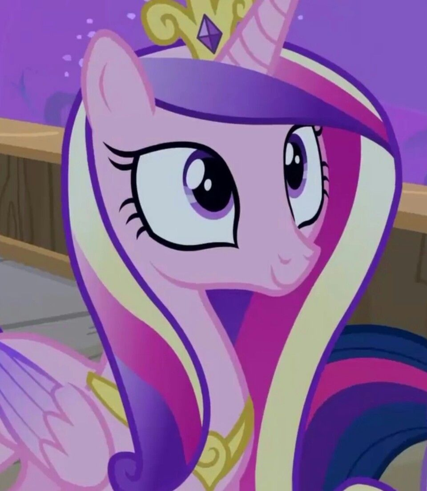
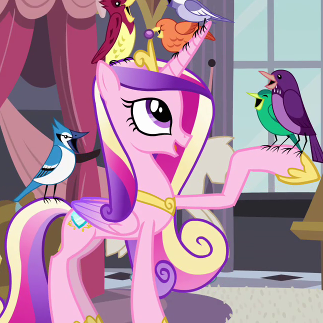
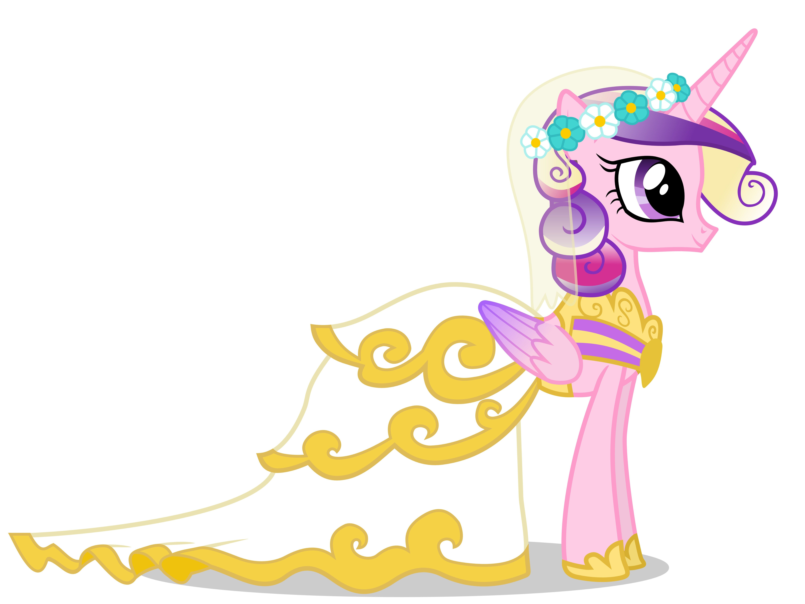
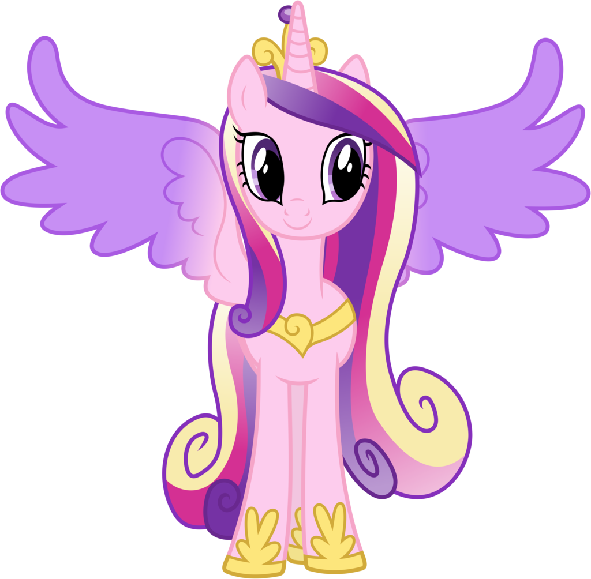
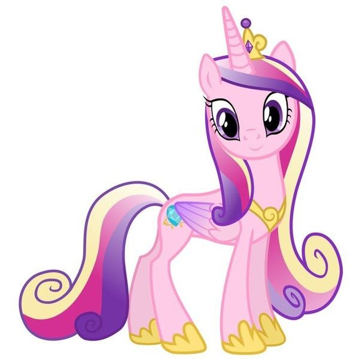
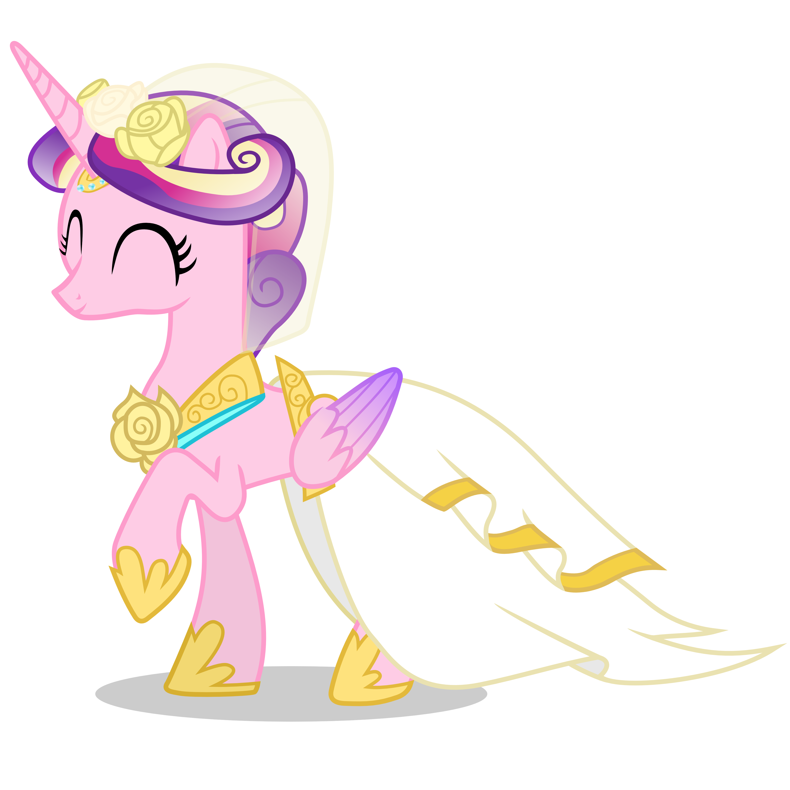
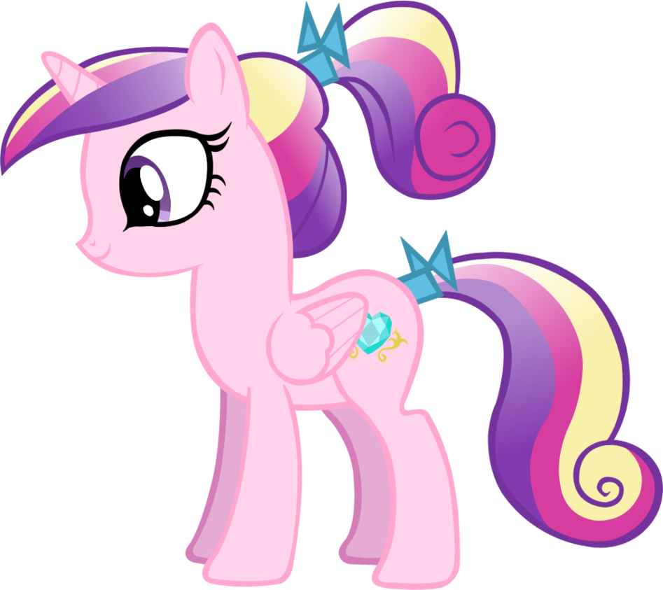
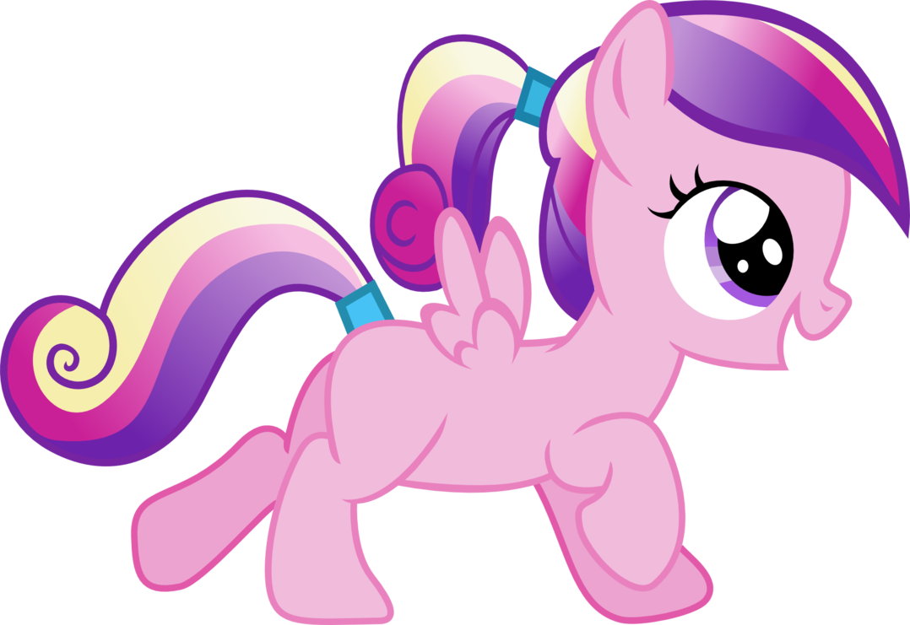
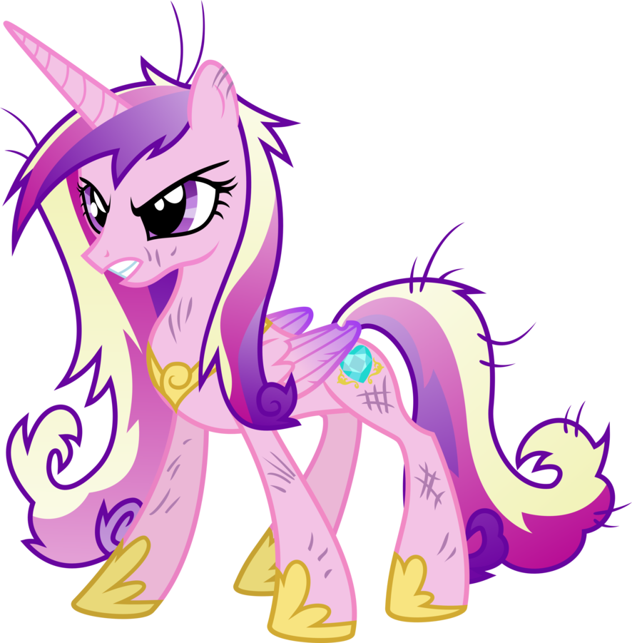

Depiction in the series
Season two:
Twilight Sparkle first mentions Cadance in A Canterlot Wedding - Part 1 as she reads Princess Celestia's invitation to the royal wedding of "Princess Mi Amore Cadenza" and Shining Armor. Twilight doesn't recognize who the princess is. When Twilight meets Shining Armor in Canterlot, he explains that Princess Mi Amore Cadenza is actually Cadance, Twilight's old foal-sitter. Twilight excitedly calls Cadance "the greatest foal-sitter in all the history of foal-sitters" and says that Cadance is beautiful, caring, and kind.
Twilight has a flashback to when she was a foal and Cadance was her foal-sitter. Cadance greets young Twilight with a hug, bandages her and wipes her tears when she's hurt, plays with her on a swing-set, tells Twilight she feels lucky to be her foal-sitter, and does a little song and dance with her. Twilight's voice-over says Cadance spreads love wherever she goes, while a brief scene shows Cadance casting a spell that quells an argument between Lucky Clover and Wild Fire. Twilight mentions in the flashback that Cadance is a princess, while Twilight calls herself "just a regular old unicorn."
Immediately after the flashback, Cadance joins Twilight and Shining Armor. Twilight enthusiastically greets her with the song-and-dance from the flashback, but Cadance coldly rebuffs her. Throughout the episode, Cadance raises Twilight's suspicions with her "demanding," "totally insincere," and "rude" behavior, as Twilight tells her friends. Twilight tries to broach the subject to Shining Armor, but Cadance interrupts before they have a chance to talk and takes Shining Armor into another room. Twilight, peeking through the door, sees Cadance casting a spell on Shining Armor. Concluding that Cadance is "downright evil," she runs off.
Twilight later confronts Cadance at the wedding rehearsal, in front of Princess Celestia and the rest of the attendants. After Cadance runs away from the rehearsal in distress, Shining Armor angrily explains that the spell Cadance used on him was meant to ease his chronic headaches. He excuses Cadance's behavior as stress from the wedding preparations. After everyone leaves, Cadance returns and at first looks down compassionately at a rebuked Twilight. Then her eyes shine green, her face becomes cruel, and she encircles Twilight in green flames, which pull her into the ground as the episode ends.
The story resumes with A Canterlot Wedding - Part 2. Underground, in "the caves beneath Canterlot," the imposter Cadance taunts Twilight through apparitions in the caves' crystals. She tells Twilight that the caves are the ideal place to keep those who try to interfere with her plans. Twilight attacks the apparitions with blasts of magical energy from her horn, and eventually breaks open a passage to find a scuffed and scared Cadance who almost immediately recognizes Twilight and tells her she's been imprisoned by the imposter Cadance. She does the song-and-dance from Twilight's flashback, proving her identity, and the two ponies warmly hug.
Cadance and her imposter share a song sequence, This Day Aria, Part 1, with Cadance and Twilight making their way out of the caves while the imposter prepares for the wedding and begins the wedding ceremony. After the song, Twilight and Cadance are confronted by the three former bridesmaids Lyra Heartstrings, Minuette and Twinkleshine, now hypnotized, who block their way out of the caves. The scene cuts to the imposter and Shining Armor almost completing their wedding ceremony, when Twilight and Cadance interrupt the wedding, and a brief flashback shows Cadance throwing a small bouquet to distract the bridesmaids. Cadance declares that the imposter is a changeling, and the imposter reveals herself as queen of the changelings. Cadance charges the queen, but backs off when the queen threatens to send her back to the caves. After a failed attempt to get the Elements of Harmony, Twilight and her friends are brought back to the wedding hall by the queen's minions, where Celestia is imprisoned in a cocoon and Cadance's hooves are glued to the floor.
Twilight takes the opportunity, when the queen is preoccupied, to free Cadance so she can reunite with Shining Armor, and her magic snaps him out of his trance. Cadance tells Shining Armor that her love will give him strength, and their magic spreads outward and repels all the changelings off into the horizon.
Twilight and her friends help Cadance put together her wedding, with arrangements meeting her enthusiastic approval, and Shining Armor jokes that Cadance agreed to marry him after he told her she'd be gaining Twilight as her sister. At the wedding, Celestia proclaims that the power of Cadance and Shining Armor's love is undeniable, and pronounces them "mare and colt." The couple look onto the castle courtyard and wave to the cheering crowds, then kiss.
After a wedding reception montage, Cadance and Shining Armor enter their chariot and Cadance tosses a bouquet, which Rarity violently claims. The happy couple then ride off into the night.

Princess Cadence
Season three:
Princess Cadance appears in season three in the episode The Crystal Empire - Part 1. When Twilight Sparkle and her friends arrive at the Crystal Empire to help Shining Armor and Princess Cadance protect the empire from King Sombra, they find Cadance in the throne room overlooking the empire. She uses her magic to power a protective barrier to fend off King Sombra, and looks haggard and weary. However, at the sight of Twilight, her close friend and new sister-in-law, she eagerly runs to her and recites their childhood chant. She tells Twilight that one day they should "get together when the fate of Equestria isn't hanging in the balance."
Shining Armor explains to the ponies that Cadance hasn't slept and barely eats because she must constantly use her magic to "spread love and light" and defend the empire. She cannot go on like that forever, so Twilight Sparkle and her friends must find another way to protect the empire. When Twilight notifies the royal couple of a disheartening discovery of the Crystal Heart being a genuine crystal artifact, Cadance reassures Twilight but suddenly collapses in Shining Armor's arms, gasping for air. Holes start appearing in her magical shield, and King Sombra's black smoke billows into the vulnerable empire.
Part 2 continues where the previous episode left off. As Sombra advances ever nearer to the empire's center, Shining Armor supports Cadance and exchanges a tender glance with her. She straightens up and recreates the magical shield, blocking Sombra's advance and slicing off the tip of his horn. This close call reminds the other ponies that they must find and restore the real Crystal Heart. However, Cadance eventually gives in to her fatigue and her magic runs out. As Sombra launches his second invasion, Spike brings the Crystal Heart down from the top of the tower, prompting Sombra to charge at him.
Seeing this, Shining Armor lifts Cadance onto his back. Cadance opens her eyes and sees a bright blue light falling towards King Sombra, who rides a black crystal. She stretches out her wings and Shining Armor throws her at the Crystal Heart. She flies fast enough to intercept both the Crystal Heart and Spike in the nick of time, leaving Sombra dumbfounded. Levitating the Crystal Heart before her and carrying Spike on her back, she flies over the astonished Crystal Ponies. Bright Smile cries, "Behold! The Crystal Princess!" She lands amidst the ponies and proclaims:
"The Crystal Heart has returned. Use the light and love within you to ensure that King Sombra does not."
— Princess Cadance
The Crystal Ponies smile and kneel before their princess as they become more translucent and resplendent than ever. Their combined power defeats Sombra and saves the Crystal Empire. Cadance later walks with Shining Armor and the Mane Six to the train.
In the episode Just for Sidekicks, Fluttershy mentions Princess Cadance, who returns in the episode Games Ponies Play. She invites Twilight and her friends to the Crystal Empire so they can welcome the Equestria Games Inspector, Ms. Harshwhinny. When the six arrive, Rarity offers to stand in for the absent hairdresser, attempting to style Cadance's mane in a traditional crystal headdress. Cadance also teaches Twilight a way to manage her stress. Rarity makes a mistake, and Cadance's mane turns out to be a mess. By the time Cadance's mane is fixed, she learns Twilight and her friends mistook a tourist, Ms. Peachbottom, for the Games Inspector.
Princess Cadance makes a brief appearance in Magical Mystery Cure, attending Twilight's coronation. She wears her crystal mane style and dress from the previous episode. This marks the first time she physically appears in an episode with no lines. When Twilight comes back in after her speech, Cadance's mane style reverts to her regular one.

Princess Cadence
Season four
In Three's A Crowd, Cadance travels from the Crystal Empire to Ponyville to spend some quality time with Twilight Sparkle, and they visit the Star Swirl the Bearded Traveling Museum. Their time together is interrupted by the arrival of Discord, who claims to be sick with the "blue flu" and begs Twilight to care for him because the rest of the Mane Six are unavailable for one reason or another.
Cadance demonstrates some of her old foal-sitting skills in dealing with the petulant and demanding Discord. She accompanies Twilight on a search for a flower that Discord claims will cure his illness. Despite the complications that arise, from her being out of practice in flying to fending off a Tatzlwurm attack, Cadance is pleased by the adventure and excitement, having felt that life in the Crystal Empire has become predictable.
Twilight mentions Cadance in Trade Ya! as being the princess to oversee the Rainbow Falls Traders Exchange before her. She mentions her again in Inspiration Manifestation, having taken part in magical clean up efforts alongside Twilight and Princess Luna.
In Equestria Games Cadance asks Spike the Dragon to light the torch at the titular sporting event in recognition of his role in defeating Sombra and his status as a hero in the Crystal Empire.
When Spike saves the Games and many ponies' lives from the accident caused by the ice archery event, Cadance offers Spike her place lighting the closing ceremonies' fireworks to help him regain his self-confidence.
In Twilight's Kingdom - Part 1, Princess Cadance greets the dignitaries from Maretonia when they arrive at the Crystal Empire. She sings to Twilight alongside Princesses Celestia and Luna during You'll Play Your Part and later attends the princesses' meeting about Lord Tirek, where she suggests that Twilight should undertake the task of hunting him down until Celestia nominates Discord instead.
When Discord joins forces with Tirek, Cadance and the other princesses give up their magic to Twilight for safekeeping. She loses her cutie mark as a consequence. When Tirek comes looking for the princesses' magic and fails to find it, he banishes them to Tartarus in revenge for his own imprisonment. Cadance and the other princesses are freed when Twilight and her friends finally defeat Tirek and return the stolen magic to its rightful owners.

Princess Cadence
Season five
In Slice of Life, Cadance appears at Cranky Doodle Donkey and Matilda's wedding, briefly consoling Shining Armor when he gets overemotional.
Cadance also appears in Princess Spike, where she charges Spike with making sure an exhausted Twilight isn't disturbed while she rests. During this, she takes notice of Spike making decisions on Twilight's behalf, much to her disappointment. When a cracked water main bursts and floods the summit hall, Cadance seals it with her magic. She later encourages Spike to make amends with the summit delegates and dedicates a gemstone statue to the ponies from all parts of Equestria.
In Party Pooped, Cadance escorts Pinkie Pie to the Crystal Empire's northern border before leaving her to continue onward to Yakyakistan alone. Later, Pinkie zips past Cadance while on a sled heading back to Ponyville. Pinkie Pie also mentions Cadance in Amending Fences.
In The One Where Pinkie Pie Knows, it is revealed that Cadance and Shining Armor are having a baby.

Princess Cadence
Season six
In The Crystalling - Part 1 and Part 2, Cadance gives birth to an Alicorn filly and assists Twilight in curbing the baby's uncontrollable magic. She and Shining Armor later give the baby the name Flurry Heart.
In The Times They Are A Changeling, Cadance is among the Crystal Empire ponies on edge due to the reported presence of a changeling, and she asks for Twilight's help in protecting Flurry Heart. When Spike approaches her and the others on the changeling Thorax's behalf, Cadance welcomes him as a new citizen of the Empire.
In To Where and Back Again - Part 1, Cadance is stated to have been captured by the changelings along with Shining Armor and Flurry Heart. At the end of Part 2, Cadance is rescued along with the other captives, and she joins in celebrating the Sunset Festival in Our Town.

Princess Cadence
Season seven
In Celestial Advice, Cadance appears at Starlight, Trixie, Thorax, and Discord's medal-awarding ceremony. She also appears in a picture on Twilight's mirror here and in Fame and Misfortune and A Health of Information. In A Flurry of Emotions, she and Shining Armor ask Twilight to babysit Flurry Heart while they attend an art show hosted by Shining Armor's old royal guard friend Spearhead. In A Royal Problem, she appears dancing in a dream bubble as Princess Celestia views the dreams of everyone in Equestria. In Once Upon a Zeppelin Cadance joins the Sparkle family for a zeppelin cruise they won in a contest, only to find out that the cruise has been set up as a paid experience for ponies to spend time with her and Twilight. When Twilight struggles with keeping everypony happy, Cadance tells her that it's okay to think about her own needs.

Princess Cadence
Season eight
Cadance's friendship mirror photo appears again in School Daze - Part 2, and in Starlight's mirror in The Maud Couple. In Road to Friendship, she appears with Flurry Heart and Twilight watching Trixie's magic show. In School Raze - Part 1, she appears in Canterlot reporting of ponies' magic failing in the Crystal Empire.

Princess Cadence
Best Gift Ever
In the hour-long special My Little Pony Best Gift Ever, Cadance, Shining Armor, and Flurry Heart visit Twilight for Hearth's Warming. Both she and Shining Armor notice how Twilight is stressed over the holiday preparations and help her to calm down, not noticing that Flurry Heart is adding extra ingredients to Twilight's magic pudding recipe. When the pudding goes out of control, Cadance and Shining Armor help fight it. After the pudding is neutralized, Cadance, Shining Armor, and Flurry enjoy Hearth's Warming with Twilight and her friends.

Princess Cadence
Season nine
In The Beginning of the End - Part 1, Cadance is captured along with Shining Armor and Flurry when King Sombra attacks the Crystal Empire. When the Mane Six arrive to help stop Sombra, Cadance regains control of the Crystal Heart while they defeat Sombra with the Elements of Harmony.
Cadance is mentioned in The Point of No Return and Frenemies.
In The Ending of the End - Part 1, Cadance, along with Shining Armor, is informed by Twilight that Chrysalis, Tirek, and Cozy Glow are on the loose and instructed to serve as Equestria's final line of defense if the Mane Six fail to stop them. In Part 2, she and Shining Armor offer to assist the Mane Six in the final battle, but Twilight tells them to protect Flurry Heart as she is "Equestria's last hope".
In The Last Problem, Cadance attends Twilight's coronation ceremony. She also briefly appears in Twilight's group shot during The Magic of Friendship Grows.

Princess Cadence